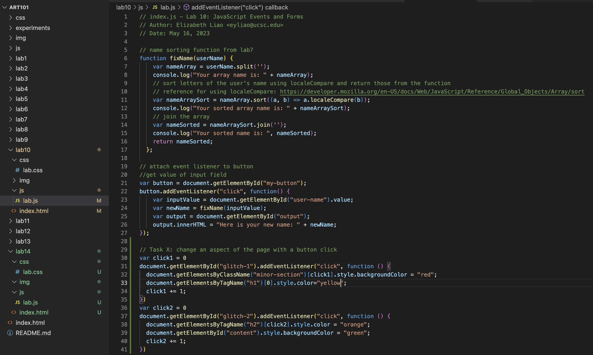
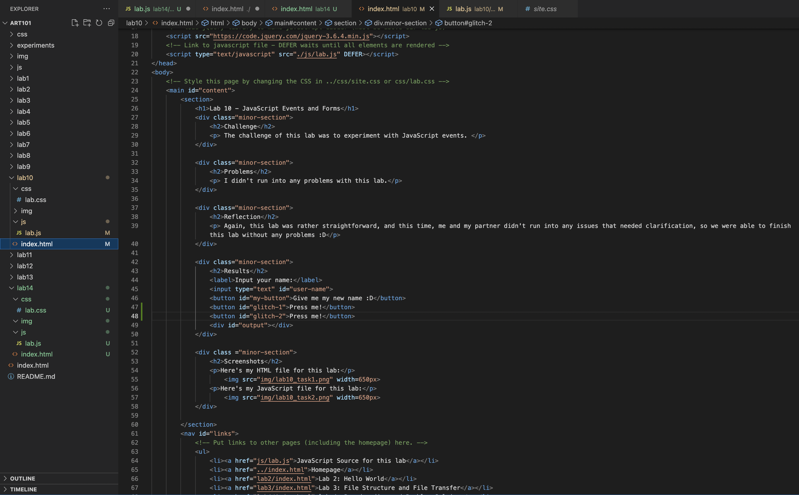
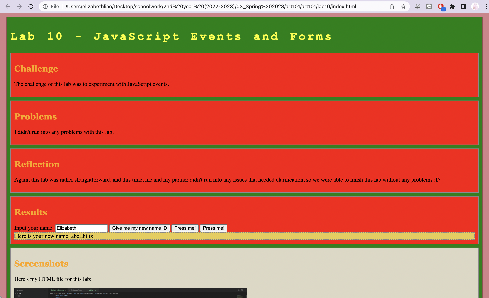

Lab 14 - Debugging Tools and Strategies
Challenge
The challenge of this lab was to debug and fix old lab assignments.
Problems
I didn't have any problems for this lab.
Reflection
This lab was again, rather simple and as I didn't have any old labs that needed debugging, I decided to work on Task X for Lab 10 instead.
Results
Look at the next section.
Debugging
Here's the JavaScript I changed for lab 10:
Here's what I changed in the index.html for lab 10:
Here's what the working page looks like:
I didn't have any labs to debug, so I decided to go back and work on Task X for Lab 10. Looking through the prompts for Task X, I deicded to do item 3, which was to add more buttons that would change different parts of the page. To do this, I first created 2 buttons in the html, each with their own IDs, then in the javascript, I added an event listener to each button that would change the colors of certain parts of the page when the button was clicked. I decided to create a variable that counts how many times the button has been clicked, and that number would correspond with which section to change for the sections defined by class since document.getElementsByClassName would return an array, so finding a speciic section within that array would need an index. Additionally, this way, the button doesn't change everything at once, but can change the page multiple times.
Screenshots
Here's my HTML file for this lab:
My JavaScript file for this lab is linked below!